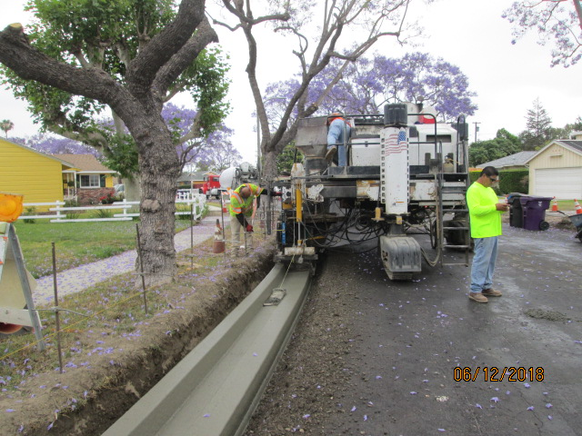
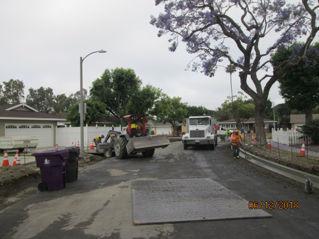
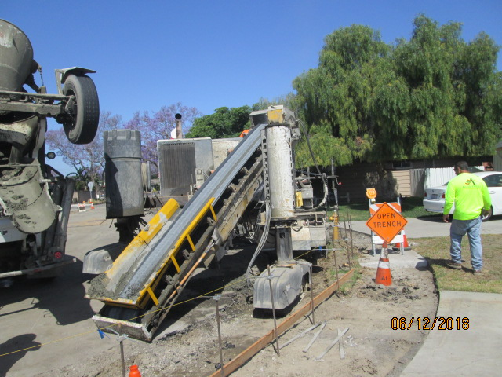
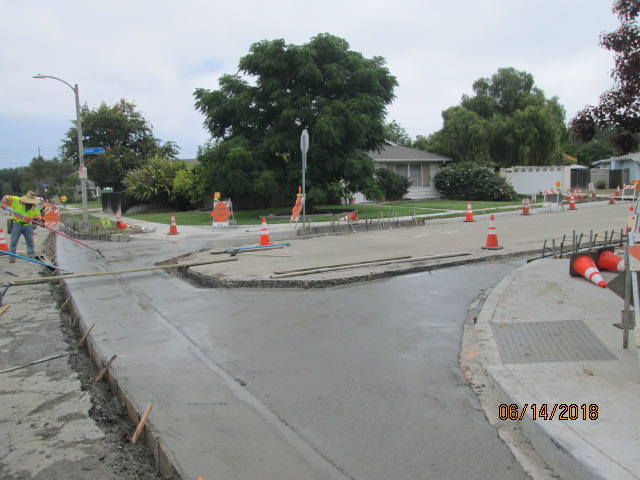

Project Details
- Category: Port / Rail / Transit Projects
- Owner: City of Long Beach
- Location: Long Beach, CA
- Delivery Method: On-Call / Task Order Contracts
- Status / Completion: 2024

The City of Long Beach launched an extensive civil public works improvement program to enhance roadway infrastructure, pedestrian access, and utility networks across multiple city districts. The initiative aimed to modernize aging streets, improve stormwater management, and ensure compliance with ADA and environmental regulations. S2 Engineering served as the prime consultant , providing on-call construction management and inspection services across a broad range of public works projects. The work included both surface-level improvements and infrastructure upgrades, with a focus on minimizing disruption to residents, businesses, and traffic.
S2 Engineering provided comprehensive on-site construction inspection and project management , ensuring that every component met project specifications and regulatory standards. Our responsibilities included Resident and office engineering for daily site oversight Verification of contractor compliance with ADA, SWPPP, and Caltrans/City specifications Coordination of multiple trades, including electrical, paving, and grading operations Maintenance of detailed documentation for submittals, RFIs, inspections, and testing reports Assisting the City with contractor claims and schedule management
Enabled the City to efficiently manage multiple concurrent civil works projects with minimal disruption Ensured all work adhered to regulatory and safety standards, avoiding penalties or rework Streamlined project documentation and reporting, improving decision-making and communication Maintained stakeholder engagement, reducing public complaints and safety incidents
Long Beach IMG 0005

Long Beach IMG 0008

Long Beach IMG 0009

Long Beach IMG 0018